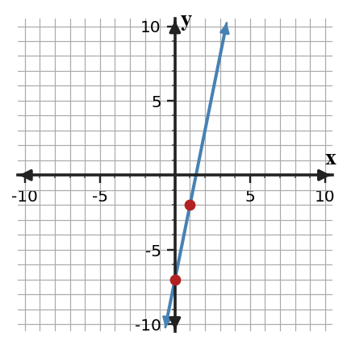
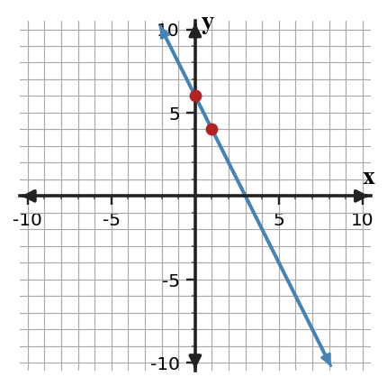
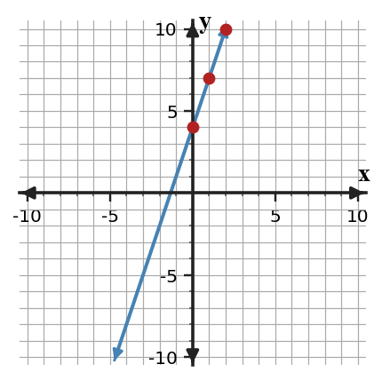

Writing Linear Equations
Mathematical idea: A linear equation is a compact model that stores the slope and starting value of a relationship.
Today you will identify $m$ and $b$, write equations from graphs and tables, and compare methods. You will also decide how equivalent equations can describe the same line.
Learning Target
Learning Target: Students will write linear equations from graphs, tables, and situations.
I can statements
- I can formulate linear equations from graphs, tables, and situations.
- I can apply slope-intercept structure to connect rate and starting value.
- I can design equivalent equations that represent the same linear relationship.
What's To Come
This is a long-range preview for future lessons. Do not solve it today. Instead, annotate it individually. Circle anything familiar, underline symbols or directions that seem important, and write notes about what information you think will be needed later.
As you annotate, ask yourself: What parts (words, symbols, graphs) do you KNOW? What parts look FAMILIAR? What parts look like jibberish?
Intro
Directions
Read the introduction aloud with a partner or in a small group. As you read, annotate the text by highlighting important ideas, circling key vocabulary, and writing short notes about connections, questions, or predictions in the margins.
Writing a linear equation means identifying the relationship's rate and starting value. In slope-intercept form, the slope is $m$ and the starting value is $b$. Once those are known, the equation can be written as $y=mx+b$.
A table can reveal slope even when no graph is shown. Compare the change in output to the matching change in input, then use the row where $x=0$ if it is given. If $x=0$ is not shown, you can work backward or substitute a point.
Sometimes two students write equations that look different. One form may show a point and a slope, while another shows the $y$-intercept directly. If they produce the same outputs for the same inputs, they can represent the same line.
Graphs with marked intercepts, tables of input-output values, and verbal descriptions all give clues for writing equations. The goal is to make the rate and starting value visible.
In contexts such as savings or phone plans, the slope names the repeated change and the intercept names the starting amount. A useful equation keeps both meanings connected to the quantities in the problem.
Stop and Discuss
- What two numbers do you need to write an equation in slope-intercept form?
- How can a table help you find slope before writing an equation?
- Why might two different-looking equations represent the same line?
Slope-intercept form is useful because the slope and intercept are visible in fixed positions.
$$y=mx+b$$| Equation | $m$ | $b$ | Meaning |
|---|---|---|---|
| $y=5x-7$ | 5 | $-7$ | start at $-7$, rise 5 per 1 right |

Context: If $x$ is weeks and $y$ is balance, $m=5$ means 5 units are added each week and $b=-7$ is the starting balance.
Example 1: Read $m$ and $b$
Identify $m$ and $b$ in $y=5x-7$.
- What is the slope?
- What is the $y$-intercept?
- Write the point where the line crosses the $y$-axis.
You Try It 1: Read Another $m$ and $b$
Identify $m$ and $b$ in $y=-\frac{1}{2}x+8$.
- What is the slope?
- What is the $y$-intercept?
- Write the point where the line crosses the $y$-axis.
Stop and Discuss
- How does the position of $m$ and $b$ in the equation help you graph the line?
To write an equation from a graph, read the $y$-intercept and use two points to find the slope.
$$m=\frac{4-6}{1-0}=-2,\qquad b=6$$ $$y=-2x+6$$| Point | $x$ | $y$ |
|---|---|---|
| intercept | 0 | 6 |
| next point | 1 | 4 |

Context: The point $(0,6)$ means the output starts at 6 before the input increases.
Example 2: Write an Equation from a Graph
Use the graphed line to build a slope-intercept equation.
- Identify the $y$-intercept.
- Find the slope using two points on the graph.
- Write the equation in slope-intercept form.
You Try It 2: Write from Intercept and Point
A line crosses the $y$-axis at $-4$ and passes through $(2,2)$.
- Use the two points to find the slope.
- Identify the starting value.
- Write the equation in slope-intercept form.
Stop and Discuss
- Which graph feature gave you $b$, and which feature gave you $m$?
A table gives enough information to write a linear equation when the output changes by a constant amount for matching input changes.
| $x$ | 0 | 3 | 6 | 9 |
|---|---|---|---|---|
| $y$ | 5 | 11 | 17 | 23 |
Context: If $x$ is hours and $y$ is total points, the slope 2 means 2 points per hour and the intercept 5 means 5 points at hour 0.
Example 3: Write an Equation from a Table
Write a linear equation for the table.
| $x$ | 0 | 3 | 6 | 9 |
|---|---|---|---|---|
| $y$ | 5 | 11 | 17 | 23 |
- Find the slope from two columns.
- Identify the starting value.
- Write the equation and explain how the table shows the slope.
You Try It 3: Write Another Table Equation
Write a linear equation for the table.
| $x$ | 0 | 2 | 4 | 6 |
|---|---|---|---|---|
| $y$ | 9 | 5 | 1 | $-3$ |
- Find the slope from two columns.
- Identify the starting value.
- Write the equation and explain how the table shows the slope.
Stop and Discuss
- Why is the row with $x=0$ especially useful when writing an equation from a table?
Two equations can be equivalent when they produce the same outputs and graph the same line.
$$y=3x+4$$ $$y-7=3(x-1)$$| $x$ | 0 | 1 | 2 |
|---|---|---|---|
| $y=3x+4$ | 4 | 7 | 10 |
| $y-7=3(x-1)$ | 4 | 7 | 10 |

Context: One form shows the starting value, while the other shows the line passing through $(1,7)$ with slope 3.
Example 4: Compare Equation-Writing Methods
Two students write an equation for the line through $(1,7)$ and $(5,19)$.
Student A: "I will find the slope, then substitute one point to find $b$."
Student B: "I will build a table backward until $x=0$."
- Find the slope of the line.
- Use one method to write the equation.
- Compare the two methods and decide which is more efficient here.
You Try It 4: Compare Methods Again
Two students write an equation for the line through $(2,1)$ and $(6,13)$.
Student A: "I will find the slope, then substitute one point to find $b$."
Student B: "I will build a table backward until $x=0$."
- Find the slope of the line.
- Use one method to write the equation.
- Compare the two methods and decide which is more efficient here.
Stop and Discuss
- How can two different methods still lead to the same equation?
Summary
Writing linear equations means finding the rate of change and the starting value, then placing them into a rule. Graphs, tables, and situations can all provide that evidence.
Slope-intercept form is $y=mx+b$. The slope $m$ names the repeated change, and $b$ names the output when $x=0$.
A common error is using a visible table change as the slope without checking the matching change in $x$.
Strong understanding means you can write an equation from different representations and explain why equivalent forms describe the same relationship.
Common Mistakes
- Using change in $y$ only. Why it is tempting: the outputs may have a clear pattern. What to check instead: divide by the matching change in $x$.
- Missing $b$. Why it is tempting: slope feels like the main feature. What to check instead: find or calculate the value when $x=0$.
- Reading the wrong intercept. Why it is tempting: a graph may cross both axes. What to check instead: use the $y$-axis for $b$ in $y=mx+b$.
- Forgetting substitution. Why it is tempting: a point and slope do not immediately show $b$. What to check instead: substitute $x$, $y$, and $m$ to solve for $b$.
- Rejecting equivalent forms. Why it is tempting: different equations can look unrelated. What to check instead: test outputs or rewrite to slope-intercept form.
Optional Future Task Reflection
Look back at the future task. Do not solve it yet. Highlight one part that makes more sense now than it did at the beginning. Circle one part that still feels unfamiliar. Write one sentence about what representation you would look at first.

What is one idea about writing linear equations you understand better now than at the start of class? Write at least one complete sentence.
What is one thing about writing linear equations you still want to understand or practice? Be specific — name the idea, not just "everything."